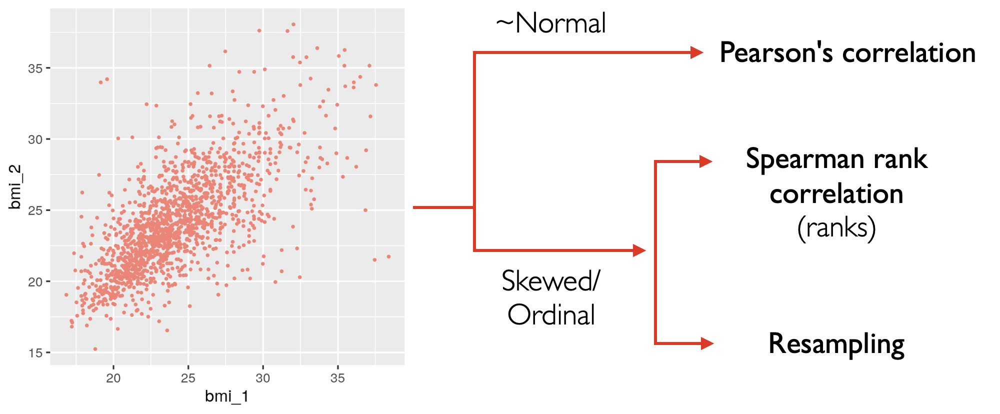
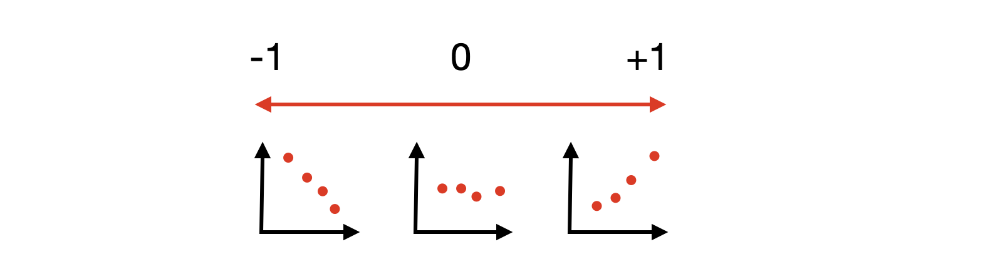
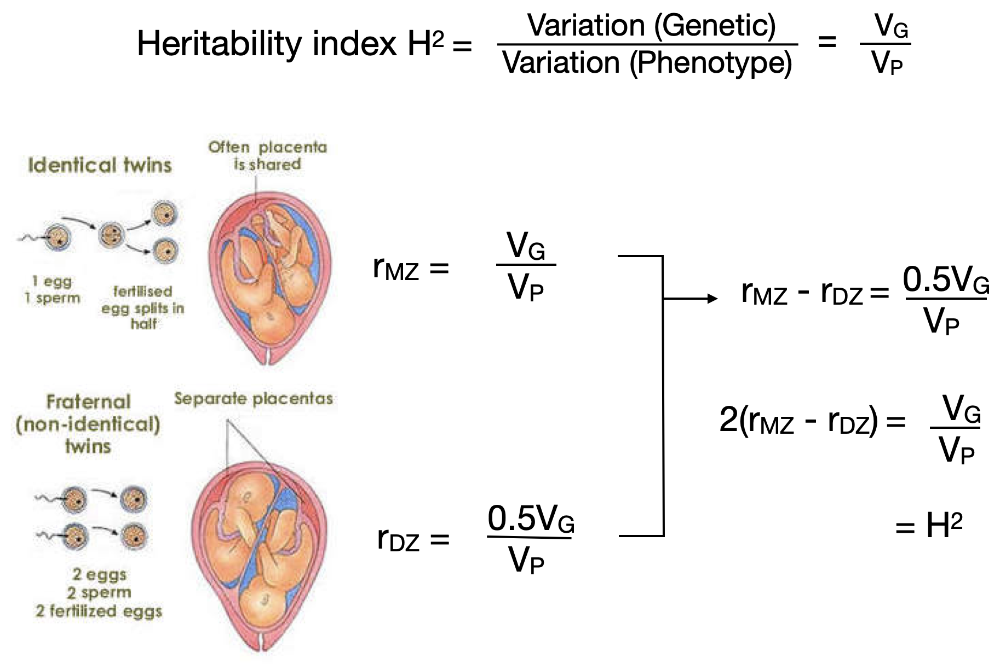

Correlating 2 measures#
We will explore how we can determine if 2 measures are correlated

Data preparation#
We will use a dataset from kkholst/mets based on a study of 7245 same-sexed Finnish MZ and DZ twin pairs aged 18-54 years from the nationwide Finnish Twin Cohort
A subset of the dataset includes
gender: male/femalezyg: whether monozygotic (MZ) or dizygotic (DZ) twinsbmi: body mass index
Show code cell source
library(tidyverse)
# Twin data from https://github.com/kkholst/mets
data <- read_csv("https://raw.githubusercontent.com/kennethban/dataset/main/twinbmi.csv")
data <- data %>%
mutate(gender = as.factor(gender),
zyg = as.factor(zyg)) %>%
pivot_wider(id_cols ="tvparnr",
names_from = "num",
values_from = c("bmi","gender","zyg")) %>%
rename(twinid = tvparnr,
zyg = zyg_1) %>%
select(-zyg_2) %>%
drop_na()
data %>% sample_n(10)
── Attaching core tidyverse packages ───────────────────────────── tidyverse 2.0.0 ──
✔ dplyr 1.1.1 ✔ readr 2.1.4
✔ forcats 1.0.0 ✔ stringr 1.5.0
✔ ggplot2 3.4.2 ✔ tibble 3.2.1
✔ lubridate 1.9.2 ✔ tidyr 1.3.0
✔ purrr 1.0.1
── Conflicts ─────────────────────────────────────────────── tidyverse_conflicts() ──
✖ dplyr::filter() masks stats::filter()
✖ dplyr::lag() masks stats::lag()
ℹ Use the conflicted package (<http://conflicted.r-lib.org/>) to force all conflicts to become errors
Rows: 11188 Columns: 7
── Column specification ─────────────────────────────────────────────────────────────
Delimiter: ","
chr (2): gender, zyg
dbl (5): tvparnr, bmi, age, id, num
ℹ Use `spec()` to retrieve the full column specification for this data.
ℹ Specify the column types or set `show_col_types = FALSE` to quiet this message.
| twinid | bmi_1 | bmi_2 | gender_1 | gender_2 | zyg |
|---|---|---|---|---|---|
| <dbl> | <dbl> | <dbl> | <fct> | <fct> | <fct> |
| 1241 | 25.33500 | 25.69707 | male | male | DZ |
| 556 | 32.59637 | 30.73061 | male | male | DZ |
| 6875 | 21.15529 | 20.06920 | female | female | DZ |
| 2477 | 26.30902 | 23.99121 | male | male | MZ |
| 1933 | 21.30395 | 23.18367 | male | male | DZ |
| 6313 | 24.67550 | 22.32143 | female | female | DZ |
| 5223 | 17.44493 | 22.77319 | female | female | DZ |
| 5160 | 21.38394 | 19.03114 | female | female | DZ |
| 6942 | 19.37716 | 21.67126 | female | female | DZ |
| 325 | 24.77210 | 24.67550 | male | male | MZ |
To illustrate how we can test for correlation, we will focus on the monozygotic twins to reduce the number of samples
Show code cell source
data_mz <- data %>%
filter(zyg=="MZ")
head(data_mz)
| twinid | bmi_1 | bmi_2 | gender_1 | gender_2 | zyg |
|---|---|---|---|---|---|
| <dbl> | <dbl> | <dbl> | <fct> | <fct> | <fct> |
| 13 | 30.36735 | 31.63740 | male | male | MZ |
| 16 | 22.72044 | 22.12974 | male | male | MZ |
| 28 | 22.32143 | 24.09297 | male | male | MZ |
| 29 | 23.58833 | 23.50780 | male | male | MZ |
| 31 | 23.29123 | 24.22023 | male | male | MZ |
| 35 | 22.83737 | 24.91349 | male | male | MZ |
We can show a scatterplot of the 2 measures
Show code cell source
# set plot dimensions
options(repr.plot.width=8, repr.plot.height=8)
data_mz %>%
ggplot(aes(x=bmi_1, y=bmi_2)) +
geom_point(color="red") +
theme_grey(base_size=16) +
theme(legend.position = "top")
By visual inspection, there appears to be a correlation between BMI values from one twin and the other twin. However, we may not be sure if this correlation could have occurred by random chance
How can we quantify correlation?#
We can consider how 2 values (X and Y) are correlated by looking at the ratio of how much X and Y vary together to the how much they vary independently.
The correlation coefficient \(r\) can vary from -1 to 1 depending on the direction of correlation

Show code cell source
data_mz %>%
summarize(n = n(),
mean_bmi_1 = mean(bmi_1),
mean_bmi_2 = mean(bmi_2),
covariance_xy = sum((bmi_1-mean_bmi_1)*(bmi_2-mean_bmi_2))/(n-1),
variance_x = sqrt(sum((bmi_1-mean_bmi_1)^2)/(n-1)),
variance_y = sqrt(sum((bmi_2-mean_bmi_2)^2)/(n-1)),
r = covariance_xy/(variance_x * variance_y)
)
| n | mean_bmi_1 | mean_bmi_2 | covariance_xy | variance_x | variance_y | r |
|---|---|---|---|---|---|---|
| <int> | <dbl> | <dbl> | <dbl> | <dbl> | <dbl> | <dbl> |
| 1483 | 24.2098 | 24.16305 | 8.581417 | 3.591942 | 3.492014 | 0.6841538 |
Using a function
We can use the cor_test function from the rstatix library
Show code cell source
data_mz %>%
rstatix::cor_test(bmi_1, bmi_2) %>%
pull(cor)
1. Resampling approach#
To get an intuition of the null hypothesis test, we can use the resampling approach
To do this, we randomly mix the values between the 2 groups and do this multiple times to generate a dataset that represents the null hypothesis
We then calculate the correlation coefficient for each permutation generated by random mixing to generate the null distribution of values
Finally, we calculate the p-value, which is the probability we find a correlation coefficient in the null distribution that is equal/greater than the correlation coefficient observed in the data
Show code cell source
# set plot dimensions
options(repr.plot.width=8, repr.plot.height=8)
data_mz %>%
ggplot(aes(x=bmi_1, y=bmi_2)) +
geom_point(color="red") +
theme_grey(base_size=16) +
theme(legend.position = "top")
1.1. Calculate the test statistic#
We calculate the r statistic using the cor_test function from the rstatix library
Show code cell source
obs_stat_r <- data_mz %>%
rstatix::cor_test(bmi_1, bmi_2) %>%
pull(cor)
obs_stat_r
1.2. Generate a null distribution by resampling#
First, we will generate 1000 samples from the data by randomly permuting the bmi_1 and bmi_2 values independently using the infer library
Show code cell source
library(infer)
num_resamples = 1000
permute <- data %>%
specify(bmi_2 ~ bmi_1) %>%
hypothesize(null="independence") %>%
generate(reps=num_resamples, type="permute")
head(permute)
tail(permute)
| bmi_2 | bmi_1 | replicate |
|---|---|---|
| <dbl> | <dbl> | <int> |
| 26.54321 | 26.33289 | 1 |
| 17.57707 | 27.25089 | 1 |
| 25.39063 | 28.04282 | 1 |
| 21.60410 | 28.06642 | 1 |
| 21.79931 | 30.47797 | 1 |
| 23.32342 | 27.39818 | 1 |
| bmi_2 | bmi_1 | replicate |
|---|---|---|
| <dbl> | <dbl> | <int> |
| 24.61810 | 26.34649 | 1000 |
| 18.82711 | 31.77393 | 1000 |
| 21.10727 | 21.35991 | 1000 |
| 21.62965 | 24.74745 | 1000 |
| 26.03749 | 19.37716 | 1000 |
| 21.87755 | 20.06096 | 1000 |
We can plot a sample of the randomly permuted dataset
Show code cell source
# set plot dimensions
options(repr.plot.width=12, repr.plot.height=12)
permute %>%
filter(replicate <= 16) %>%
ggplot(aes(x=bmi_1, y=bmi_2)) +
geom_point(color="salmon", alpha=0.2) +
facet_wrap(~replicate) +
theme_grey(base_size=16)
We calculate the r statistic for each replicate by using the cor_test function from the rstatix library
Show code cell source
# calculate correlation coefficient for each replicate
resample <- permute %>%
group_by(replicate) %>%
group_modify(~(.x %>% rstatix::cor_test(bmi_1, bmi_2) %>%
select(cor) %>%
rename(stat = cor))) %>% ungroup
head(resample)
tail(resample)
| replicate | stat |
|---|---|
| <int> | <dbl> |
| 1 | 0.0018 |
| 2 | 0.0140 |
| 3 | -0.0190 |
| 4 | 0.0027 |
| 5 | -0.0190 |
| 6 | -0.0140 |
| replicate | stat |
|---|---|
| <int> | <dbl> |
| 995 | 0.01600 |
| 996 | 0.00860 |
| 997 | 0.02500 |
| 998 | 0.00500 |
| 999 | 0.00032 |
| 1000 | -0.01000 |
We now have a distribution of r statistic under the assumption that there is no correlation between the BMI measurements of the twins
1.3. Use the null distribution to calculate the p-value#
Now that we have the r null distribution, we can check if any of these values exceed the r statistic in the data obs_stat_r
Show code cell source
resample <- resample %>%
mutate(exceed = if_else(abs(stat) >= abs(obs_stat_r), "Y","N") %>%
factor(levels=c("Y","N")))
resample %>% sample_n(10)
| replicate | stat | exceed |
|---|---|---|
| <int> | <dbl> | <fct> |
| 987 | 0.0069 | N |
| 281 | 0.0150 | N |
| 190 | 0.0250 | N |
| 744 | 0.0140 | N |
| 257 | -0.0140 | N |
| 96 | 0.0260 | N |
| 210 | 0.0150 | N |
| 196 | -0.0150 | N |
| 555 | -0.0180 | N |
| 469 | 0.0230 | N |
We can visualize the distribution of r statistic values and indicate those values that are equal or exceed the the observed r statistic in the data
Show code cell source
# set plot dimensions
options(repr.plot.width=8, repr.plot.height=8)
resample %>% ggplot(aes(x=stat, fill=exceed)) +
geom_histogram(binwidth=0.005) +
geom_vline(xintercept = obs_stat_r, color = "red", linetype="dashed") +
geom_vline(xintercept = -obs_stat_r, color = "red", linetype="dashed") +
scale_fill_manual(values=c("salmon", "grey50"),
labels=c("Y","N"), drop=FALSE) +
theme_grey(base_size=16) +
theme(legend.position = "top")
Finally, we can get the p-value by calculating how many times the r statistic in the null distribution is equal/exceeds the observed r statistic
Show code cell source
resample %>% summarize(num_resample = n(),
num_exceed = if_else(exceed == "Y", 1,0) %>% sum,
p_value = num_exceed/num_resample)
| num_resample | num_exceed | p_value |
|---|---|---|
| <int> | <dbl> | <dbl> |
| 1000 | 0 | 0 |
As the p-value is small, the observed correlation coefficient is unlikely to be consistent with the null hypothesis. Thus, the correlation between the BMI values of the twins is unlikely to be due to random chance
2. Analytical approach#
In the analytical approach, the null distribution is not derived from resampling, but it is calculated from a theoretical formula that generalizes the distribution
Show code cell source
# set plot dimensions
options(repr.plot.width=8, repr.plot.height=8)
data_mz %>%
ggplot(aes(x=bmi_1, y=bmi_2)) +
geom_point(color="red") +
theme_grey(base_size=16) +
theme(legend.position = "top")
2.1. Calculate the test statistic#
We can calculate the t-statistic by dividing the r coefficient by its standard error (SE)
The standard error (SE) of r is defined by
Thus
Show code cell source
num_pairs <- nrow(data_mz)
df <- num_pairs - 2
obs_stat_t <- obs_stat_r*sqrt(df/(1-obs_stat_r^2))
abs(obs_stat_t)
2.2. Use the theoretical null distribution to calculate the p-value#
The null t distribution is parameterized by the degrees of freedom df
df= number of pairs - 2
We use the vdist_t_prob function from vistributions library to plot the t-distribution and calculate the p-value
Show code cell source
library(vistributions)
# set plot dimensions
options(repr.plot.width=8, repr.plot.height=8)
vdist_t_prob(perc = obs_stat_t,
df=df,
type = "both")
We see that the p-value ~ 0, which is the value we obtained through resampling
Using a function
We can also use the cor_test function from the rstatix library
Show code cell source
data_mz %>% rstatix::cor_test(bmi_1, bmi_2)
| var1 | var2 | cor | statistic | p | conf.low | conf.high | method |
|---|---|---|---|---|---|---|---|
| <chr> | <chr> | <dbl> | <dbl> | <dbl> | <dbl> | <dbl> | <chr> |
| bmi_1 | bmi_2 | 0.68 | 36.09961 | 3.01e-205 | 0.6560999 | 0.7103194 | Pearson |
3. Rank-based approach#
The analytic approach based on theoretical distributions assumes a normal distribution of the data. This parametric approach may not work well under certain situations
Small and/or skewed data that are not normally distributed
Data that are ordinal in nature (e.g. pain score 1, ranking of food preferences)
We will use the same dataset to illustrate the Spearman correlation test
Convert values to ranks
Calculate the rank-based test statistic
Calculate the p-value based on the null distribution
Show code cell source
# set plot dimensions
options(repr.plot.width=8, repr.plot.height=8)
data_mz %>%
ggplot(aes(x=bmi_1, y=bmi_2)) +
geom_point(color="red") +
theme_grey(base_size=16) +
theme(legend.position = "top")
We can look at the QQ plots of both BMI variables
Show code cell source
# set plot dimensions
options(repr.plot.width=5, repr.plot.height=5)
# QQ plot for bmi_1
data_mz %>%
ggplot(aes(sample=bmi_1)) +
geom_qq(color="red") +
geom_qq_line() +
theme_grey(base_size = 16)
# QQ plot for bmi_2
data_mz %>%
ggplot(aes(sample=bmi_2)) +
geom_qq(color="red") +
geom_qq_line() +
theme_grey(base_size = 16)
As we see that some of the values deviate from the normal distribution, we can use the rank-based approach
3.1. Calculate test statistic#
We will calculate the rho correlation statistic
Convert the values to ranks
Calculate the sum of squared differences of ranks between the 2 groups
Calculate the rho correlation based on the sum squared differences of ranks
Show code cell source
data_rank <- data_mz %>%
mutate(bmi1_rank=rank(bmi_1),
bmi2_rank=rank(bmi_2))
head(data_rank)
| twinid | bmi_1 | bmi_2 | gender_1 | gender_2 | zyg | bmi1_rank | bmi2_rank |
|---|---|---|---|---|---|---|---|
| <dbl> | <dbl> | <dbl> | <fct> | <fct> | <fct> | <dbl> | <dbl> |
| 13 | 30.36735 | 31.63740 | male | male | MZ | 1397.5 | 1440.0 |
| 16 | 22.72044 | 22.12974 | male | male | MZ | 566.5 | 443.5 |
| 28 | 22.32143 | 24.09297 | male | male | MZ | 491.0 | 810.0 |
| 29 | 23.58833 | 23.50780 | male | male | MZ | 723.5 | 684.0 |
| 31 | 23.29123 | 24.22023 | male | male | MZ | 661.5 | 828.0 |
| 35 | 22.83737 | 24.91349 | male | male | MZ | 580.5 | 946.0 |
Show code cell source
# set plot dimensions
options(repr.plot.width=8, repr.plot.height=8)
data_rank %>%
ggplot(aes(x=bmi1_rank, y=bmi2_rank)) +
geom_point(color="red") +
theme_grey(base_size=16) +
theme(legend.position = "top")
Next, we calculate the sum of squared differences between ranks of 2 groups
Show code cell source
sum_d2 <- data_rank %>%
mutate(d = bmi1_rank-bmi2_rank,
d2 = d^2) %>%
summarize(sum_d2 = sum(d2)) %>%
pull(sum_d2)
sum_d2
Recall that the correlation measure is
For ranks, the correlation measure (rho) is equivalent to
For details, see: https://stats.stackexchange.com/questions/89121/prove-the-equivalence-of-the-following-two-formulas-for-spearman-correlation
Show code cell source
n <- nrow(data_rank)
obs_stat_rho <- 1 - 6*sum_d2/(n*(n^2-1))
obs_stat_rho
Using a function
We can also use the cor_test function from the rstatix library by specifying the method = "spearman" option
Show code cell source
data_mz %>%
rstatix::cor_test(bmi_1,bmi_2,
method="spearman") %>%
pull(cor)
3.2. Use the null distribution of ranks to find the p-value#
Now that we have the test statistic, we will need to generate a null distribution to compare it to.
Using a resampling approach#
To get an intuition of the null distribution of rho statistic, we can simulate the null distribution by permuting the different ranks in the groups and calculating the rho statistic for each replicate
Note that we do not resample from the data but generate the distribution of ranks from a range consistent with the number of observations
We calculate the rho statistic for each replicate to generate the null distribution and check which values in the null distribution equal or exceed the observed rho statistic in the data
Show code cell source
# calculate rho statistic for 1 sample of random pair of ranks
sample_once <- function(n) {
rank1 <- sample(seq(1,n),n)
rank2 <- sample(seq(1,n),n)
d2 <- (rank1 - rank2)^2
p <- 6*sum(d2)/(n*(n^2-1))
return(1-p)
}
# resample to generate null distribution and check for extreme values
n_sample <- nrow(data)
n_replicates <- 10000
resample <- tibble(rho=as.numeric(replicate(n_replicates,sample_once(n_sample)), simplify=F)) %>%
mutate(exceed=ifelse(rho>=abs(obs_stat_rho),"Y","N") %>%
factor(levels=c("Y","N")))
head(resample)
| rho | exceed |
|---|---|
| <dbl> | <fct> |
| -0.003530687 | N |
| 0.004147959 | N |
| 0.018169880 | N |
| 0.003397787 | N |
| 0.026460818 | N |
| -0.012115529 | N |
We can plot the null distribution and and see how often the rho statistic in the null distribution equals or exceeds what we observe in the data
Show code cell source
# set plot dimensions
options(repr.plot.width=8, repr.plot.height=8)
resample %>%
ggplot(aes(x=rho,fill=exceed)) +
geom_histogram(bins=100) +
geom_vline(xintercept = obs_stat_rho, color = "red", linetype="dashed") +
geom_vline(xintercept = -obs_stat_rho, color = "red", linetype="dashed") +
scale_fill_manual(values=c("salmon", "grey50"),
labels=c("Y","N"), drop=FALSE) +
theme_grey(base_size=16) +
theme(legend.position = "top")
Show code cell source
resample %>% summarize(num_resample = n(),
num_exceed = if_else(exceed == "Y", 1,0) %>% sum,
p_value = num_exceed/num_resample)
| num_resample | num_exceed | p_value |
|---|---|---|
| <int> | <dbl> | <dbl> |
| 10000 | 0 | 0 |
As the p-value is small, the observed rho statistic is unlikely to be consistent with the null hypothesis. Thus, the rank correlation between the BMI values of the twins is unlikely to be due to random chance
Using a theoretical null distribution#
Analytically, we can use the null t-distribution that is parameterized by df, where
df = number of pairs - 2
We can calculate the t-statistic from the rho statistic
Show code cell source
num_pairs <- nrow(data_mz)
df <- num_pairs - 2
obs_stat_t <- obs_stat_rho*sqrt((num_pairs - 2)/(1-obs_stat_rho^2))
obs_stat_t
We use the vdist_t_prob function from vistributions library to plot the t-distribution and calculate the p-value
Show code cell source
library(vistributions)
# set plot dimensions
options(repr.plot.width=8, repr.plot.height=8)
vdist_t_prob(perc = obs_stat_t,
df=df,
type = "both")
We see that the p-value ~ 0, which is the value we obtained through resampling
Using a function
We can also use the cor_test function from the rstatix library by specifying the method = "spearman" option
Show code cell source
data_mz %>% rstatix::cor_test(bmi_1,
bmi_2,
method="spearman")
| var1 | var2 | cor | statistic | p | method |
|---|---|---|---|---|---|
| <chr> | <chr> | <dbl> | <dbl> | <dbl> | <chr> |
| bmi_1 | bmi_2 | 0.7 | 165457624 | 5.76e-215 | Spearman |
A digression#
We can make use of the correlation coefficients in twins to make inferences about the heritability of a trait. In the dataset, there are
Monozygotic (MZ) twins that share 100% of the genes
Dizygotic (DZ) twins that share 50% of the genes
Show code cell source
# set plot dimensions
options(repr.plot.width=10, repr.plot.height=7)
data %>%
ggplot(aes(x=bmi_1, y=bmi_2, color=zyg)) +
geom_point() +
facet_wrap(~zyg) +
theme(legend.position = "top")
We can see that the correlation for MZ twins appears to be higher than DZ twins and we can calculate the r statistic using the cor_test function
Show code cell source
cor_twins <- data %>%
group_by(zyg) %>%
rstatix::cor_test(bmi_1, bmi_2) %>%
as_tibble %>%
ungroup %>%
select(zyg, cor) %>%
pivot_wider(names_from = "zyg", values_from = "cor")
cor_twins
| DZ | MZ |
|---|---|
| <dbl> | <dbl> |
| 0.37 | 0.68 |
We can make use of the fact that DZ twins have share half the genetic identity compared to MZ twins to calculate the heritability index \(H_2\)

Show code cell source
cor_twins %>%
summarize(heritability_index = 2 * (MZ - DZ))
| heritability_index |
|---|
| <dbl> |
| 0.62 |
We can see that BMI has a large heritable component based on the twin correlation study
Application: Statistical plotting#
We will use the ggstatsplot library. For details see: https://indrajeetpatil.github.io/ggstatsplot/
library(ggstatsplot)
You can cite this package as:
Patil, I. (2021). Visualizations with statistical details: The 'ggstatsplot' approach.
Journal of Open Source Software, 6(61), 3167, doi:10.21105/joss.03167
library(tidyverse)
# Twin data from https://github.com/kkholst/mets
data <- read_csv("https://raw.githubusercontent.com/kennethban/dataset/main/twinbmi.csv")
data <- data %>%
mutate(gender = as.factor(gender),
zyg = as.factor(zyg)) %>%
pivot_wider(id_cols ="tvparnr",
names_from = "num",
values_from = c("bmi","gender","zyg")) %>%
rename(twinid = tvparnr,
zyg = zyg_1) %>%
select(-zyg_2) %>%
drop_na()
data_mz <- data %>%
filter(zyg=="MZ")
head(data_mz)
Rows: 11188 Columns: 7
── Column specification ─────────────────────────────────────────────────────────────
Delimiter: ","
chr (2): gender, zyg
dbl (5): tvparnr, bmi, age, id, num
ℹ Use `spec()` to retrieve the full column specification for this data.
ℹ Specify the column types or set `show_col_types = FALSE` to quiet this message.
| twinid | bmi_1 | bmi_2 | gender_1 | gender_2 | zyg |
|---|---|---|---|---|---|
| <dbl> | <dbl> | <dbl> | <fct> | <fct> | <fct> |
| 13 | 30.36735 | 31.63740 | male | male | MZ |
| 16 | 22.72044 | 22.12974 | male | male | MZ |
| 28 | 22.32143 | 24.09297 | male | male | MZ |
| 29 | 23.58833 | 23.50780 | male | male | MZ |
| 31 | 23.29123 | 24.22023 | male | male | MZ |
| 35 | 22.83737 | 24.91349 | male | male | MZ |
1. Parametric plot (Pearson’s Correlation)#
We will make a scatterplot looking at the correlation between 2 groups with the parametric Pearson’s correlation index using the ggscatterstats function from ggstatsplot
x: group 1 valuesy: group 2 valuestype: default isparametricmarginal: set to FALSE to omit the marginal plots
For details, see: https://indrajeetpatil.github.io/ggstatsplot/reference/ggscatterstats.html
# set plot dimensions
options(repr.plot.width=10, repr.plot.height=10)
data_mz %>%
ggscatterstats(x = bmi_1,
y = bmi_2,
marginal = FALSE) +
theme_grey(base_size=16)
2. Non-parametric plot (Spearman’s Rank Correlation)#
We will make a scatterplot looking at the correlation between 2 groups with the non-parametric Spearman’s rank correlation index using the ggscatterstats function from ggstatsplot
x: group 1 valuesy: group 2 valuestype: set tononparametricmarginal: set to FALSE to omit the marginal plots
For details, see: https://indrajeetpatil.github.io/ggstatsplot/reference/ggscatterstats.html
data_mz %>%
ggscatterstats(x = bmi_1,
y = bmi_2,
type="nonparametric",
marginal = FALSE) +
theme_grey(base_size=16)
Exercise - Correlating 2 measures#
For this exercise, we will use the Framingham heart dataset
library(tidyverse)
# load data
data_plot <- read_csv("https://raw.githubusercontent.com/kennethban/dataset/main/framingham.csv")
# recap of what was done
data_plot <- data_plot %>%
rename(sex = male) %>%
mutate(sex = as.factor(sex),
age = as.integer(age),
education = as.factor(education),
currentSmoker = as.factor(currentSmoker),
cigsPerDay = as.integer(cigsPerDay),
BPMeds = as.factor(BPMeds),
prevalentStroke = as.factor(prevalentStroke),
prevalentHyp = as.factor(prevalentHyp),
diabetes = as.factor(diabetes),
totChol = as.integer(totChol),
heartRate = as.integer(heartRate),
TenYearCHD = as.factor(TenYearCHD)
)
data_plot <- data_plot %>%
mutate(glucose = round(glucose/18, digits=1)) %>% # mg/dL to mmol/L
mutate(totChol = round(totChol/39, digits=1)) # mg/dL to mmol/L
head(data_plot)
Rows: 4240 Columns: 16
── Column specification ─────────────────────────────────────────────────────────────
Delimiter: ","
dbl (16): male, age, education, currentSmoker, cigsPerDay, BPMeds, prevalent...
ℹ Use `spec()` to retrieve the full column specification for this data.
ℹ Specify the column types or set `show_col_types = FALSE` to quiet this message.
| sex | age | education | currentSmoker | cigsPerDay | BPMeds | prevalentStroke | prevalentHyp | diabetes | totChol | sysBP | diaBP | BMI | heartRate | glucose | TenYearCHD |
|---|---|---|---|---|---|---|---|---|---|---|---|---|---|---|---|
| <fct> | <int> | <fct> | <fct> | <int> | <fct> | <fct> | <fct> | <fct> | <dbl> | <dbl> | <dbl> | <dbl> | <int> | <dbl> | <fct> |
| 1 | 39 | 4 | 0 | 0 | 0 | 0 | 0 | 0 | 5.0 | 106.0 | 70 | 26.97 | 80 | 4.3 | 0 |
| 0 | 46 | 2 | 0 | 0 | 0 | 0 | 0 | 0 | 6.4 | 121.0 | 81 | 28.73 | 95 | 4.2 | 0 |
| 1 | 48 | 1 | 1 | 20 | 0 | 0 | 0 | 0 | 6.3 | 127.5 | 80 | 25.34 | 75 | 3.9 | 0 |
| 0 | 61 | 3 | 1 | 30 | 0 | 0 | 1 | 0 | 5.8 | 150.0 | 95 | 28.58 | 65 | 5.7 | 1 |
| 0 | 46 | 3 | 1 | 23 | 0 | 0 | 0 | 0 | 7.3 | 130.0 | 84 | 23.10 | 85 | 4.7 | 0 |
| 0 | 43 | 2 | 0 | 0 | 0 | 0 | 1 | 0 | 5.8 | 180.0 | 110 | 30.30 | 77 | 5.5 | 0 |
Part 1#
Plot the distributions of totChol and BMI using ggplot from tidyverse
library(tidyverse)
# start here
Show code cell content
# solution
# set plot dimensions
options(repr.plot.width=8, repr.plot.height=8)
data_plot %>%
ggplot(aes(x=totChol)) +
geom_histogram() +
theme_grey(base_size=16)
data_plot %>%
ggplot(aes(x=BMI)) +
geom_histogram() +
theme_grey(base_size=16)
`stat_bin()` using `bins = 30`. Pick better value with `binwidth`.
Warning message:
“Removed 50 rows containing non-finite values (`stat_bin()`).”
`stat_bin()` using `bins = 30`. Pick better value with `binwidth`.
Warning message:
“Removed 19 rows containing non-finite values (`stat_bin()`).”
Part 2#
Generate statistical plots showing the correlation between totChol and BMI using ggscatterstats from ggstatsplot
Explain your choice of test
State the effect size, 95% CI and p-value
library(ggstatsplot)
# start here
Show code cell content
# solution
# set plot dimensions
options(repr.plot.width=8, repr.plot.height=8)
data_plot %>%
ggscatterstats(x=BMI,
y=totChol,
marginal=FALSE) +
theme_grey(base_size=16)